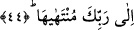
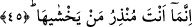

bildirebileceksin ki sana bunun beyânını soruyorlar?” Bu ifâde, tıpkı A’raf sûresinde
yer alan “sanki sen onu biliyormuşsun gibi sana (kıyametin vaktini) soruyorlar”
(A’raf 7/187) ifâdesi gibidir. Bu açıklamalar ışığında âyet-i kerimeye mânâ verecek
olursak şöyle diyebiliriz: Sen, ilminin bir parçası olduğu gerekçesiyle kıyametin ne
zaman kopacağını hiç bir şekilde bilip onlara bildiremezsin. Çünkü kıyamet bilgisi,
senin bilgi alanına girmez. Böyle bir bilgi sende nereden ve nasıl oluşsun ki! Çünkü
kıyamet bilgisi Allamu’l-ğuyub olan Allah’ın özel olarak kendisine ayırıp seçmiş
olduğu bir bilgidir.
44. Onun nihai ilmi yalnız Rabbine âiddir.
Kıyametin nihâi bilgisi yalnız senin Rabbine âiddir. Kim olursa olsun hiç kimsenin bu
konuda bilgisi yoktur. O halde kıyametin ne zaman kopacağını niçin sana soruyorlar?
Hz. Âişe (r.anhâ) buyurdu ki: Hz. Peygamber (s.a.) kıyametin vaktini Allah’tan
sormak istediğinde Allah Teâlâ “sen kıyameti ne bileceksin?” diye buyurdu. Yani onun
ilmine sâhip olmaya hakkın yoktur. Sakın ilmin nihâyeti olan kıyamet hakkında Rabbine
soru sorma. Yani kıyamet ilmi hususunda kimseye bir bilgi verilmemiştir, onun bilgisi
sâdece Rabbine mahsustur.
Kâşânî bu âyetlere şöyle mânâ vermektedir: Kıyametin ilmini ve bilgisini sen nereden
bileceksin? Onun bilgisi ancak senin Rabbine âiddir. Çünkü kıyametin ne zaman
kopacağını bilenin ilmi Allah’ın ilmi ile silinir, yok olur. Sonra zatı Allah’ın zatında
fani olur. Şu halde hiçbir ilmi ve zatı olmayan bir kimse kıyametin ne zaman kopacağını
nasıl bilebilir. Şu halde sen ve senden başkası onun ilminden ne bileceksiniz? Aksine
onu yalnız Allah bilir.
45. Sen ancak ondan korkanları uyarırsın.
Senin vazifen kıyametin yaklaştığını beyâna, gelip çattığında çeşitli korkuların
meydana geleceğine dâir almış olduğun tebliğ emrine sarılmaktır. Yoksa bilgisi sana
verilmemiş olan o vakti tayin etmek değildir. O halde onlar beyânı senin vazifen
olmayan bir konuyu neden sana soruyorlar? Bir başka ifâdeyle; sen bunun vaktini
bilmeyen bir uyarıcısın.
Âyetteki “innemâ ente munzirun” ifâdesi, kasru’l-mevsuf ale’s-sıfat kabilinden olup
“uyarıcılık görevi ancak sana âiddir” mânâsını ifâde etmektedir. Bu cümleyi “mâ ente
munzirun illâ men yehşâhâ/sen ancak ondan korkanı uyarıcısın “ şeklinde anlamak da